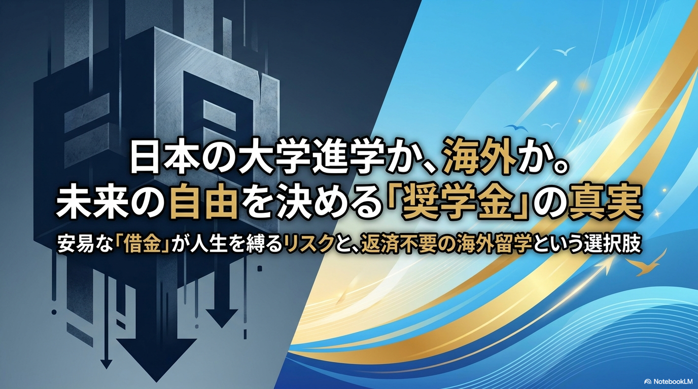
子どもには、希望する進路を歩ませてあげたい。 そう考える高校生や保護者は多いでしょう。
しかし、日本の大学進学には、授業料だけでなく入学金、 受験費用、一人暮らしの住居費や生活費もかかります。 家計だけで全額を用意するのが難しい家庭にとって、 奨学金は進学を支える重要な制度です。
その一方で、貸与型奨学金は、名前こそ「奨学金」ですが、 卒業後に返済しなければならない教育ローンでもあります。 大切なのは、今借りられるかだけではなく、 その返済が卒業後の人生にどのような影響を与えるかまで考えることです。
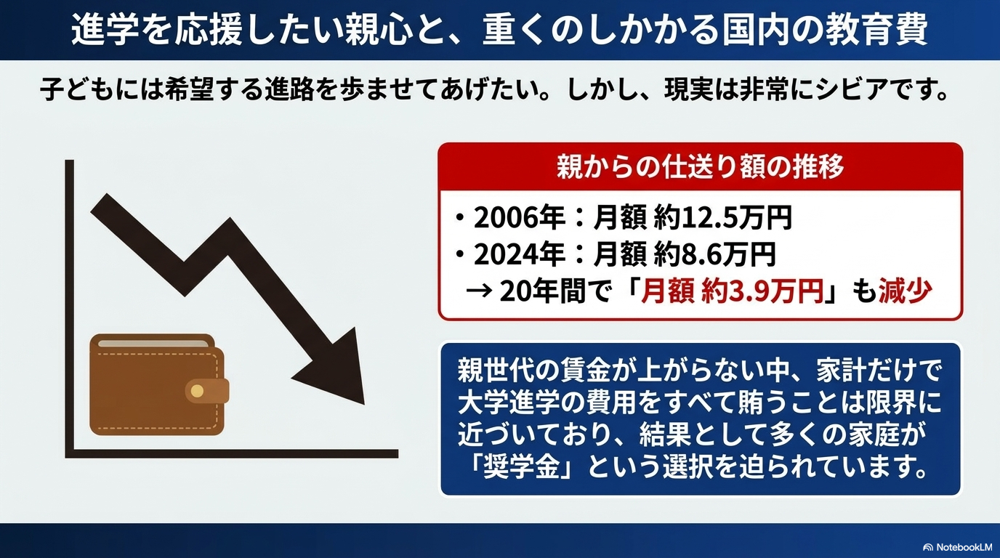
大学生の約2人に1人が奨学金を利用している
貸与型奨学金は、一部の特別な学生だけが使う制度ではありません。 多くの大学生が、学費や生活費を補うために利用しています。
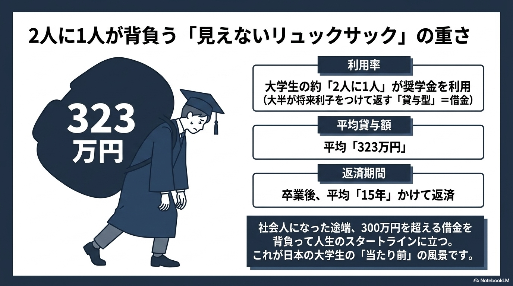
借りている間は、毎月振り込まれる金額に目が向きやすくなります。 しかし、月額を4年間借り続ければ、卒業時の借入総額は数百万円になります。
- 月額ではなく、卒業時の借入総額を確認する
- 無利子か有利子かを確認する
- 毎月の返還額と返還期間を確認する
- 何歳まで返済が続くのかを確認する
「低金利だから安心」という前提は崩れ始めている
日本では長期間にわたり低金利が続いたため、 有利子奨学金でも利息は小さいという認識が広がっていました。 しかし、金利環境が変われば、卒業時に適用される利率も変わります。
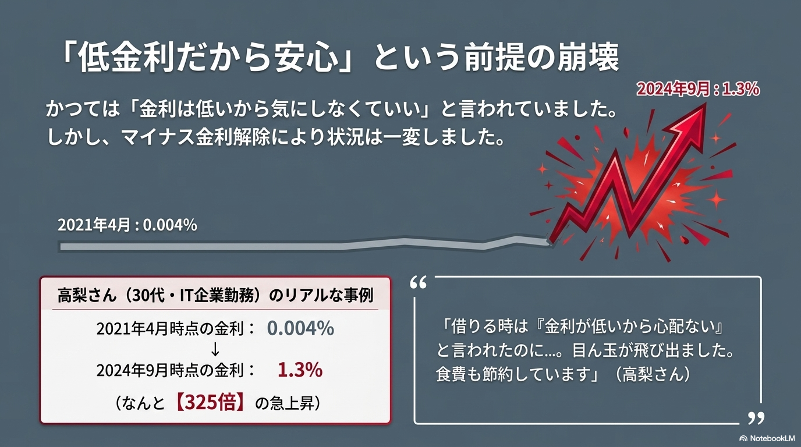
同じ金額を借りても、卒業年度や選択した利率の算定方式によって、 最終的な返還総額が大きく異なる可能性があります。
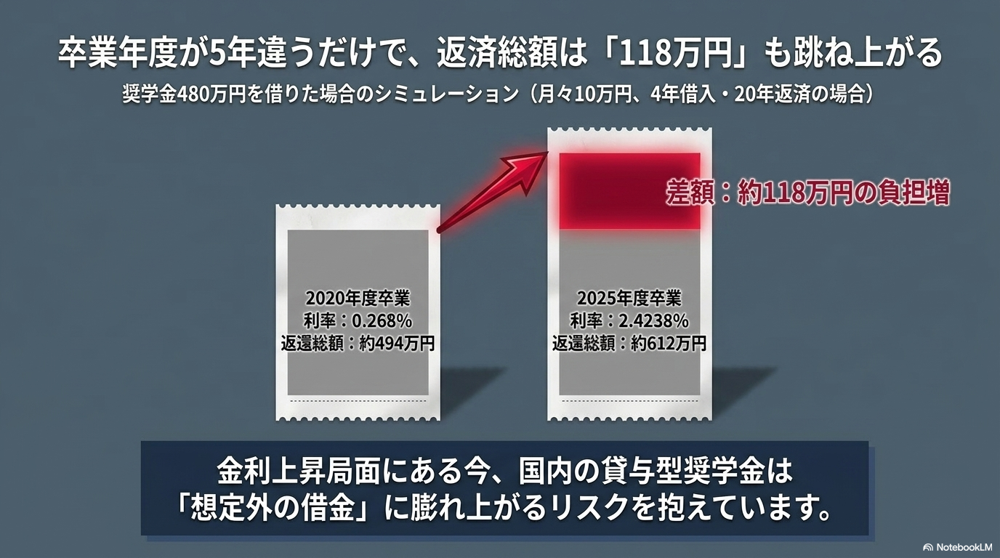
数値は必ず最新の公式資料で確認してください
適用利率や返還総額は、貸与額、貸与期間、返還方式、 利率の算定方式などによって異なります。 実際に借りる前に、日本学生支援機構の最新資料と 返還シミュレーションを確認することが重要です。
奨学金は、卒業後も続く「20年ローン」になり得る
奨学金の負担は、大学を卒業した瞬間に終わるものではありません。 返還期間によっては、20代から30代、場合によっては40代まで続きます。
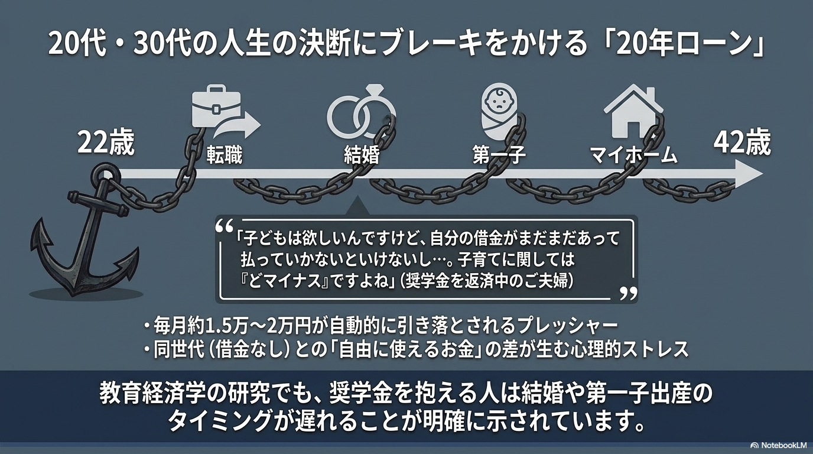
20代から30代は、転職、結婚、出産、大学院進学、 起業、海外移住、住宅購入など、大きな選択が集中する時期です。
毎月の返済があると、 「収入が下がる可能性のある転職は避けよう」 「仕事を辞めたら返せなくなる」 と考え、望まない職場に残る判断につながることもあります。
借金が消えた人と、残った人を比べた自然実験
学生ローンが若者の行動にどのような影響を与えるかについて、 米国では、信用情報のシステム上の事情によって 一部の人の債務記録が消えた事例を利用した研究があります。
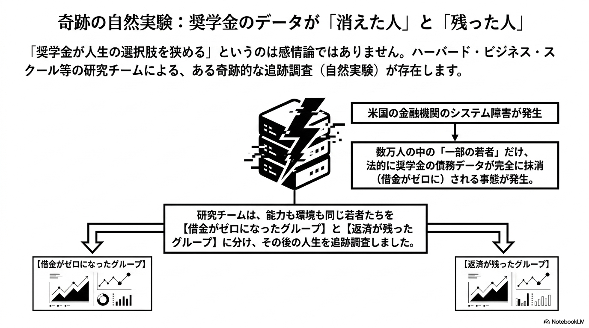
債務負担がなくなった人は、転職や居住地の変更など、 将来の収入につながる選択を取りやすくなったことが示されました。
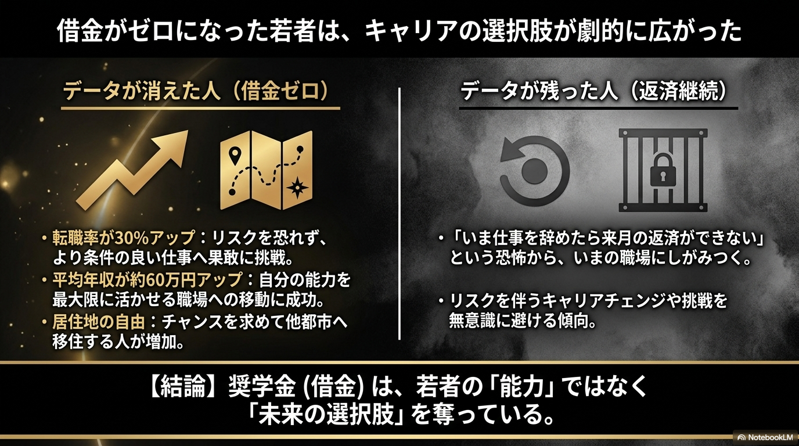
もちろん、米国の学生ローンと日本の奨学金は制度が異なります。 ただし、借金が若者の能力そのものではなく、 将来の選択肢や挑戦のしやすさに影響するという点は、 進学費用を考えるうえで重要な示唆です。
国内進学だけを「当たり前」にしない
日本で大学進学を考えるとき、 日本の大学へ進み、足りない費用を貸与型奨学金で補う方法が 最も一般的な選択肢に見えます。
しかし、世界に目を向けると、 外国人学生に対して授業料免除や生活費支援を行う国があります。 国内で数百万円を借りる前に、 返済不要の海外奨学金も比較する価値があります。
返済不要のハンガリー政府奨学金
その代表例の一つが、 ハンガリー政府奨学金 「スティペンディウム・ハンガリカム」です。
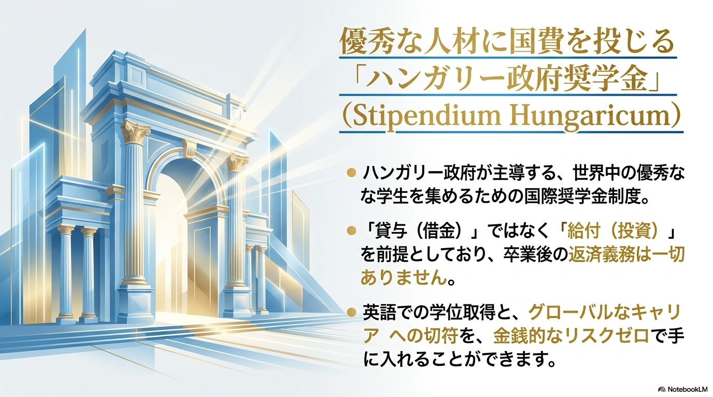
世界各国の学生を対象とした国際奨学金で、 採用されると、英語で学位を取得しながら 複数の経済的支援を受けられます。
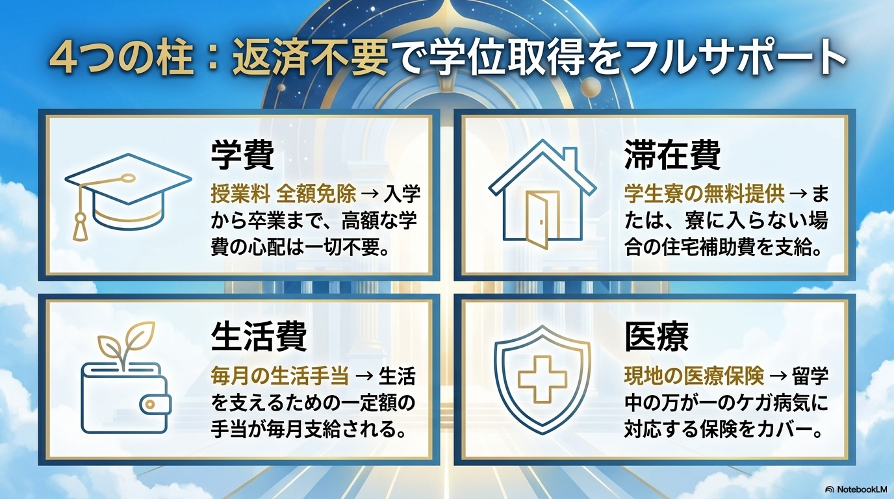
主な支援は、授業料免除、毎月の給付金、 学生寮または住居費補助、医療保険です。 貸与ではなく給付であるため、 原則として卒業後に返済する必要はありません。
「完全無料」とは限りません
航空券、ビザ関連費用、初期費用、教材費などは 自己負担になる場合があります。 また、都市や住居によっては、給付額だけでは 生活費をすべて賄えないこともあります。
22歳のスタートラインは、大きく変わる
国内の貸与型奨学金を利用した場合と、 返済不要の政府奨学金で学位を取得した場合では、 卒業時のスタートラインが大きく異なる可能性があります。
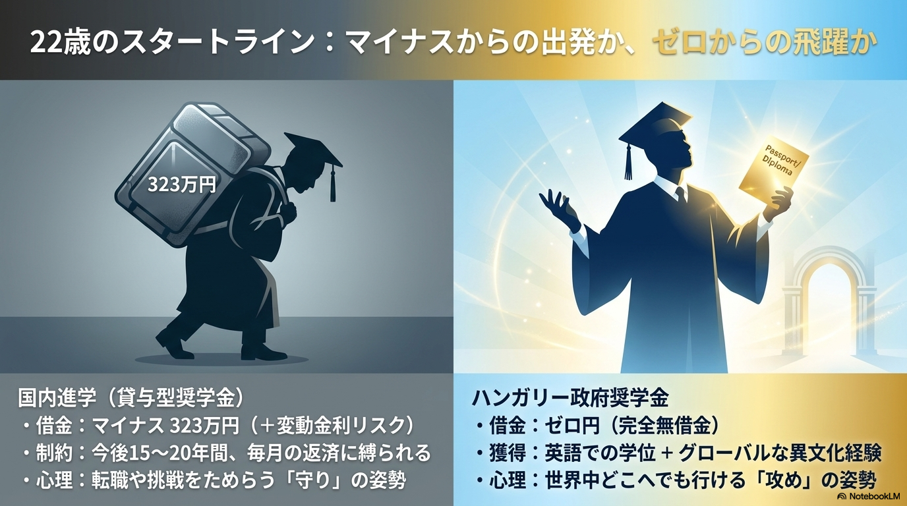
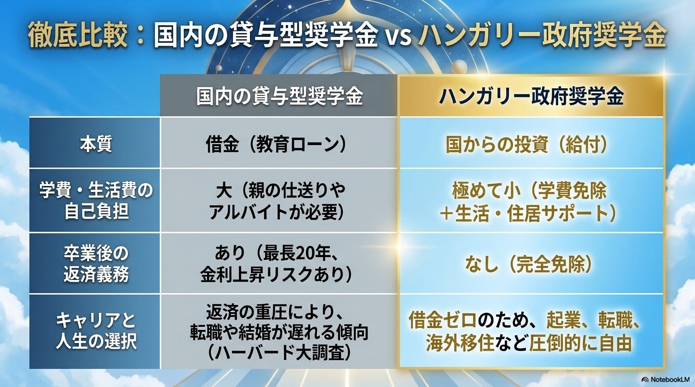
借金がなければ必ず成功するわけではありません。 しかし、転職、大学院進学、海外就職、起業などに挑戦するとき、 毎月の返済義務がないことは大きな自由になります。
海外進学にも準備とリスクがある
返済不要の奨学金があるからといって、 海外進学が簡単な道というわけではありません。
- 英語力や大学ごとの入学選考が必要
- 奨学金に不採用となる可能性がある
- 渡航費や初期費用の準備が必要
- 授業についていくための学力と自己管理が必要
- ビザ、住居、保険などを自分で準備する必要がある
- 卒業後の就職や学位の活用方法も考える必要がある
国内大学と海外大学のどちらが正解かは、 学びたい分野、英語力、家庭の資金、 卒業後の希望によって変わります。 大切なのは、選択肢を知ったうえで比較することです。
まとめ：「借りられるか」ではなく、卒業後にどう生きたいか
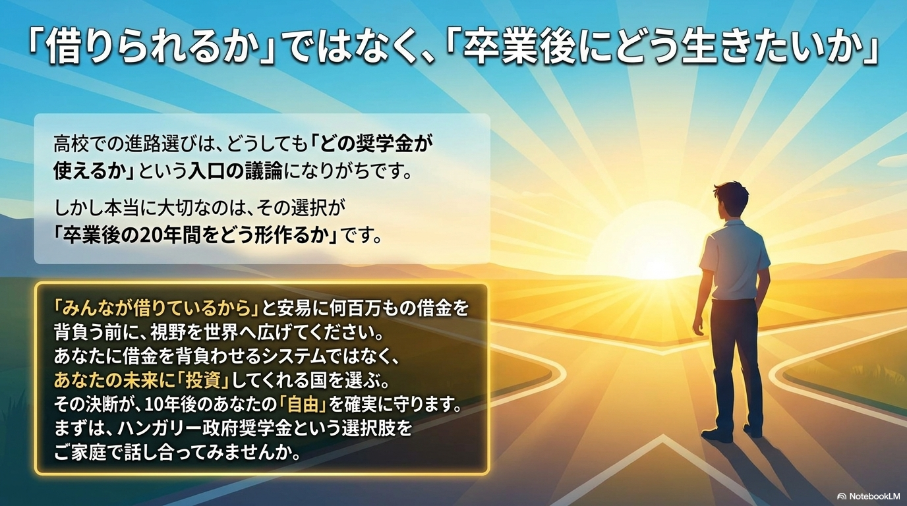
奨学金は、進学の機会を広げる大切な制度です。 しかし、借りられることと、無理なく返せることは同じではありません。
国内大学へ進学する場合は、 借入総額、金利、毎月の返還額、 返済が終わる年齢まで確認しましょう。
そのうえで、給付型奨学金、授業料減免、 返済不要の海外政府奨学金も比較してみてください。 進路選択で大切なのは、 「今、大学へ入れるか」だけではなく、 「卒業後にどのような人生を送りたいか」です。
公開前に確認したい出典
- 日本学生支援機構：奨学金の利用状況、平均貸与額、返還期間
- 日本学生支援機構：第二種奨学金の最新利率と返還例
- 学生ローン債務の消去を利用した米国の自然実験研究
- スティペンディウム・ハンガリカム公式募集要項
数値は年度や条件によって変わるため、 公開時点の公式資料を確認し、数値の直後に出典リンクを掲載してください。